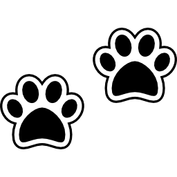
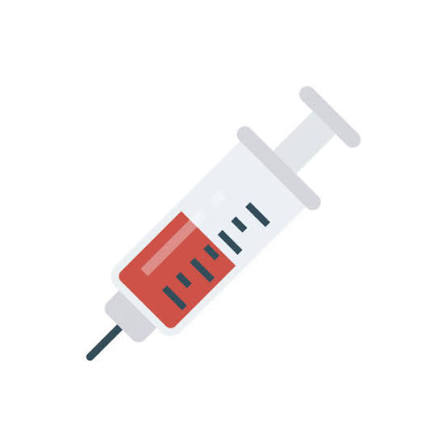
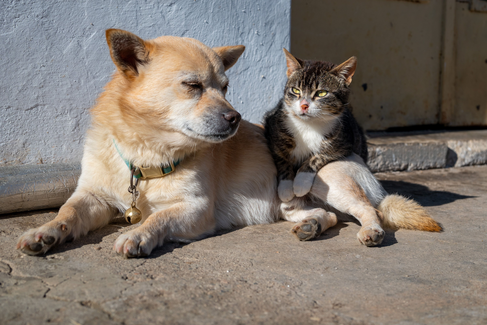
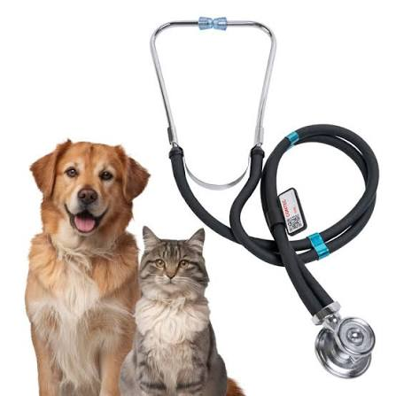

|
|
AnimalitosClínica Veterinaria |
Su salud, nuestra prioridadEn nuestra clínica veterinaria cuidamos a tus mascotas como si fueran parte de la familia. Ofrecemos atención y cariño para mantener a tus mejores amigos saludables. |

|
|
 Consultas generalesRevisiones y chequeos para una vida saludable. |
 VacunaciónProtege a tu mascota de enfermedades. |
CirugíasAtención veterinaria especializada. |
Alimentos y accesoriosTodo lo que tu mascota necesita. |
¿Quiénes somos?Somos una clínica veterinaria comprometida con el bienestar de tus mascotas. Contamos con un equipo de profesionales apasionados por los animales y con la mejor atención para tus compañeros. Nuestra misión es cuidar su salud, brindarles cariño y ayudarte a mantenerlos felices y saludables. |
 |
Nuestros servicios
|
 |
AnimalitosClínica Veterinaria |
DirecciónAv. Los Pinos #123, Col. Centro.Tlaxcala, México |
ContactoTeléfono: 961 123 4567.Correo: info@animalitos.com Horario: Lunes a sábado |
Animalitos Clínica Veterinaria
Todos los derechos reservados.